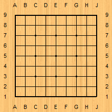

Reviews
This section provides the game records of 9 × 9 Go played by top professional Go players, with full annotation. The best moves in these games were checked by KataGo (v1.12.1; b18nbts550; >200 visits per move) run on iPhone 15 with A Master of Go (v.6.0.1). KataGo is the strongest superhuman 9 × 9 Go player at the time of this writing. An old and much weaker version of KataGo (KataTest) topped the chart of Go Quest in 2019. KataTest was undefeated in the 93-game experiment and the only invincible on Go Quest.
Big Matches
| Year | Player | Rank | Annotation |
|---|---|---|---|
| 1968 | Miyamoto Naoki | 8p | A1 |
| 1968 | Go Seigen | 9p | A2 |
| 2000 | Takemiya Masaki | 9p | A3 |
| 2000 | Yuki Satoshi | 9p | A4 |
| 2001 | Cho Hunhyun | 9p | A5 |
| 2013 | Iyama Yuta | 9p | A6 |